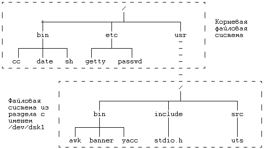
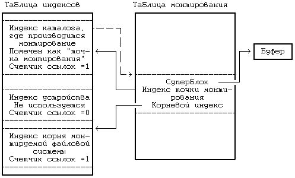
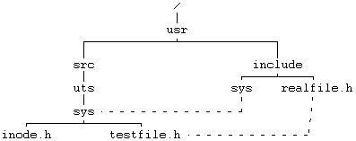

Физический диск состоит из нескольких логических разделов, на которые он разбит дисковым драйвером, причем каждому разделу соответствует файл устройства, имеющий определенное имя. Процессы обращаются к данным раздела, открывая соответствующий файл устройства и затем ведя запись и чтение из этого "файла", представляя его себе в виде последовательности дисковых блоков. Это взаимодействие во всех деталях рассматривается в главе 10. Раздел диска может содержать логическую файловую систему, состоящую из блока начальной загрузки, суперблока, списка индексов и информационных блоков (см. главу 2). Системная функция mount (монтировать) связывает файловую систему из указанного раздела на диске с существующей иерархией файловых систем, а функция umount (демонтировать) выключает файловую систему из иерархии. Функция mount, таким образом, дает пользователям возможность обращаться к данным в дисковом разделе как к файловой системе, а не как к последовательности дисковых блоков.
Синтаксис вызова функции mount:
mount(special pathname,directory pathname,options);
где special pathname - имя специального файла устройства, соответствующего дисковому разделу с монтируемой файловой системой, directory pathname - каталог в существующей иерархии, где будет монтироваться файловая система (другими словами, точка или место монтирования), а options указывает, следует ли монтировать файловую систему "только для чтения" (при этом не будут выполняться такие функции, как write и creat, которые производят запись в файловую систему). Например, если процесс вызывает функцию mount следующим образом:
mount("/dev/dsk1","/usr",0);
ядро присоединяет файловую систему, находящуюся в дисковом разделе с именем "/dev/dsk1", к каталогу "/usr" в существующем дереве файловых систем (см. Рисунок 5.22). Файл "/dev/dsk1" является блочным специальным файлом, т.е. он носит имя устройства блочного типа, обычно имя раздела на диске. Ядро предполагает, что раздел на диске с указанным именем содержит файловую систему с суперблоком, списком индексов и корневым индексом. После выполнения функции mount к корню смонтированной файловой системы можно обращаться по имени "/usr". Процессы могут обращаться к файлам в монтированной файловой системе и игнорировать тот факт, что система может отсоединяться. Только системная функция link контролирует файловую систему, так как в версии V не разрешаются связи между файлами, принадлежащими разным файловым системам (см. раздел 5.15).

Рисунок 5.22. Дерево файловых систем до и после выполнения функции mount
Ядро поддерживает таблицу монтирования с записями о каждой монтированной файловой системе. В каждой записи таблицы монтирования содержатся:
- номер устройства, идентифицирующий монтированную файловую систему (упомянутый выше логический номер файловой системы);
- указатель на буфер, где находится суперблок файловой системы;
- указатель на корневой индекс монтированной файловой системы ("/" для файловой системы с именем "/dev/dsk1" на Рисунке 5.22);
- указатель на индекс каталога, ставшего точкой монтирования (на Рисунке 5.22 это каталог "usr", принадлежащий корневой файловой системе).
Связь индекса точки монтирования с корневым индексом монтированной файловой системы, возникшая в результате выполнения системной функции mount, дает ядру возможность легко двигаться по иерархии файловых систем без получения от пользователей дополнительных сведений.
алгоритм mount
входная информация: имя блочного специального файла
имя каталога точки монтирования
опции ("только для чтения")
выходная информация: отсутствует
{
если (пользователь не является суперпользователем)
возвратить (ошибку);
получить индекс для блочного специального файла (алго-
ритм namei);
проверить допустимость значений параметров;
получить индекс для имени каталога, где производится
монтирование (алгоритм namei);
если (индекс не является индексом каталога или счетчик
ссылок имеет значение > 1)
{
освободить индексы (алгоритм iput);
возвратить (ошибку);
}
найти свободное место в таблице монтирования;
запустить процедуру открытия блочного устройства для
данного драйвера;
получить свободный буфер из буферного кеша;
считать суперблок в свободный буфер;
проинициализировать поля суперблока;
получить корневой индекс монтируемой системы (алгоритм
iget), сохранить его в таблице монтирования;
сделать пометку в индексе каталога о том, что каталог
является точкой монтирования;
освободить индекс специального файла (алгоритм iput);
снять блокировку с индекса каталога точки монтирования;
}
|
Рисунок 5.23. Алгоритм монтирования файловой системы
На Рисунке 5.23 показан алгоритм монтирования файловой системы. Ядро позволяет монтировать и демонтировать файловые системы только тем процессам, владельцем которых является суперпользователь. Предоставление возможности выполнять функции mount и umount всем пользователям привело бы к внесению с их стороны хаоса в работу файловой системы, как умышленному, так и явившемуся результатом неосторожности. Суперпользователи могут разрушить систему только случайно.
Ядро находит индекс специального файла, представляющего файловую систему, подлежащую монтированию, извлекает старший и младший номера, которые идентифицируют соответствующий дисковый раздел, и выбирает индекс каталога, в котором файловая система будет смонтирована. Счетчик ссылок в индексе каталога должен иметь значение, не превышающее 1 (и меньше 1 он не должен быть - почему?), в связи с наличием потенциально опасных побочных эффектов (см. упражнение 5.27). Затем ядро назначает свободное место в таблице монтирования, помечает его для использования и присваивает значение полю номера устройства в таблице. Вышеуказанные назначения производятся немедленно, поскольку вызывающий процесс может приостановиться, следуя процедуре открытия устройства или считывая суперблок файловой системы, а другой процесс тем временем попытался бы смонтировать файловую систему. Пометив для использования запись в таблице монтирования, ядро не допускает использования в двух вызовах функции mount одной и той же записи таблицы. Запоминая номер устройства с монтируемой системой, ядро может воспрепятствовать повторному монтированию одной и той же системы другими процессами, которое, будь оно допущено, могло бы привести к непредсказуемым последствиям (см. упражнение 5.26).
Ядро вызывает процедуру открытия для блочного устройства, содержащего файловую систему, точно так же, как оно делает это при непосредственном открытии блочного устройства (глава 10). Процедура открытия устройства обычно проверяет существование такого устройства, иногда производя инициализацию структур данных драйвера и посылая команды инициализации аппаратуре. Затем ядро выделяет из буферного пула свободный буфер (вариант алгоритма getblk) для хранения суперблока монтируемой файловой системы и считывает суперблок, используя один из вариантов алгоритма read. Ядро сохраняет указатель на индекс каталога, в котором монтируется система, давая возможность маршрутам поиска файловых имен, содержащих имя "..", пересекать точку монтирования, как мы увидим дальше. Оно находит корневой индекс монтируемой файловой системы и запоминает указатель на индекс в таблице монтирования. С точки зрения пользователя, место (точка) монтирования и корень файловой системы логически эквивалентны, и ядро упрочивает эту эквивалентность благодаря их сосуществованию в одной записи таблицы монтирования. Процессы больше не могут обращаться к индексу каталога - точки монтирования.
Ядро инициализирует поля в суперблоке файловой системы, очищая поля для списка свободных блоков и списка свободных индексов и устанавливая число свободных индексов в суперблоке равным 0. Целью инициализации (задания начальных значений полей) является сведение к минимуму опасности разрушить файловую систему, если монтирование осуществляется после аварийного завершения работы системы. Если ядро заставить думать, что в суперблоке отсутствуют свободные индексы, то это приведет к запуску алгоритма ialloc, ведущего поиск на диске свободных индексов. К сожалению, если список свободных дисковых блоков испорчен, ядро не исправляет этот список изнутри (см. раздел 5.17 о сопровождении файловой системы). Если пользователь монтирует файловую систему только для чтения, запрещая проведение всех операций записи в системе, ядро устанавливает в суперблоке соответствующий флаг. Наконец, ядро помечает индекс каталога как "точку монтирования", чтобы другие процессы позднее могли ссылаться на нее. На Рисунке 5.24 представлен вид различных структур данных по завершении выполнения функции mount.
Давайте повторно рассмотрим поведение алгоритмов namei и iget в случаях, когда маршрут поиска файлов проходит через точку монтирования. Точку монтирования можно пересечь двумя способами: из файловой системы, где производится монтирование, в файловую систему, которая монтируется (в направлении от глобального корня к листу), и в обратном направлении. Эти способы иллюстрирует следующая последовательность команд shell'а.
mount /dev/dsk1 /usr
cd /usr/src/uts
cd ../../..
По команде mount после выполнения некоторых логических проверок запускается системная функция mount, которая монтирует файловую систему в дисковом разделе с именем "/dev/dsk1" под управлением каталога "/usr". Первая из команд cd (сменить каталог) побуждает командный процессор shell вызвать системную функцию chdir, выполняя которую, ядро анализирует имя пути поиска, пересекающего точку монтирования в "/usr". Вторая из команд cd приводит к тому, что ядро анализирует имя пути поиска и пересекает точку монтирования в третьей компоненте ".." имени.

Рисунок 5.24. Структуры данных после монтирования
Для случая пересечения точки монтирования в направлении из файловой системы, где производится монтирование, в файловую систему, которая монтируется, рассмотрим модификацию алгоритма iget (Рисунок 5.25), которая идентична версии алгоритма, приведенной на Рисунке 4.3, почти во всем, за исключением того, что в данной модификации производится проверка, является ли индекс индексом точки монтирования. Если индекс имеет соответствующую пометку, ядро соглашается, что это индекс точки монтирования. Оно обнаруживает в таблице монтирования запись с указанным индексом точки монтирования и запоминает номер устройства монтируемой файловой системы. Затем, используя номер устройства и номер индекса корня, общего для всех файловых систем, ядро обращается к индексу корня монтируемого устройства и возвращает при выходе из функции этот индекс. В первом примере смены каталога ядро обращается к индексу каталога "/usr" из файловой системы, в которой производится монтирование, обнаруживает, что этот индекс имеет пометку "точка монтирования", находит в таблице монтирования индекс корня монтируемой файловой системы и обращается к этому индексу.
алгоритм iget
входная информация: номер индекса в файловой системе
выходная информация: заблокированный индекс
{
выполнить
{
если (индекс в индексном кеше)
{
если (индекс заблокирован)
{
приостановиться (до освобождения индекса);
продолжить; /* цикл с условием продолжения */
}
/* специальная обработка для точек монтирования */
если (индекс является индексом точки монтирования)
{
найти запись в таблице монтирования для точки мон-
тирования;
получить новый номер файловой системы из таблицы
монтирования;
использовать номер индекса корня для просмотра;
продолжить; /* продолжение цикла */
}
если (индекс в списке свободных индексов)
убрать из списка свободных индексов;
увеличить счетчик ссылок для индекса; |
возвратить (индекс);
}
/* индекс отсутствует в индексном кеше */
убрать новый индекс из списка свободных индексов;
сбросить номер индекса и файловой системы;
убрать индекс из старой хеш-очереди, поместить в новую;
считать индекс с диска (алгоритм bread);
инициализировать индекс (например, установив счетчик
ссылок в 1);
возвратить (индекс);
}
}
|
Рисунок 5.25. Модификация алгоритма получения доступа к индексу
Для второго случая пересечения точки монтирования в направлении из файловой системы, которая монтируется, в файловую систему, где выполняется монтирование, рассмотрим модификацию алгоритма namei (Рисунок 5.26). Она похожа на версию алгоритма, приведенную на Рисунке 4.11. Однако, после обнаружения в каталоге номера индекса для данной компоненты пути поиска ядро проверяет, не указывает ли номер индекса на то, что это корневой индекс файловой системы. Если это так и если текущий рабочий индекс так же является корневым, а компонента пути поиска, в свою очередь, имеет имя "..", ядро идентифицирует индекс как точку монтирования. Оно находит в таблице монтирования запись, номер устройства в которой совпадает с номером устройства для последнего из найденных индексов, получает индекс для каталога, в котором производится монтирование, и продолжает поиск компоненты с именем "..", используя только что полученный индекс в качестве рабочего. В корне файловой системы, тем не менее, корневым каталогом является ".."
алгоритм namei /* превращение имени пути поиска в индекс */
входная информация: имя пути поиска
выходная информация: заблокированный индекс
{
если (путь поиска берет начало с корня)
рабочий индекс = индексу корня (алгоритм iget);
в противном случае
рабочий индекс = индексу текущего каталога
(алгоритм iget);
выполнить (пока путь поиска не кончился)
{
считать следующую компоненту имени пути поиска;
проверить соответствие рабочего индекса каталогу
и права доступа;
если (рабочий индекс соответствует корню и компо-
нента имени "..")
продолжить; /* цикл с условием продолжения */
поиск компоненты:
считать каталог (рабочий индекс), повторяя алго-
ритмы bmap, bread и brelse;
если (компонента соответствует записи в каталоге
(рабочем индексе))
{
получить номер индекса для совпавшей компонен-
ты;
если (найденный индекс является индексом кор-
ня и рабочий индекс является индексом корня
и имя компоненты "..") |
{
/* пересечение точки монтирования */
получить запись в таблице монтирования для
рабочего индекса;
освободить рабочий индекс (алгоритм iput);
рабочий индекс = индексу точки монтирования;
заблокировать индекс точки монтирования;
увеличить значение счетчика ссылок на рабо-
чий индекс;
перейти к поиску компоненты (для "..");
}
освободить рабочий индекс (алгоритм iput);
рабочий индекс = индексу с новым номером
(алгоритм iget);
}
в противном случае /* компонента отсутствует в
каталоге */
возвратить (нет индекса);
}
возвратить (рабочий индекс);
}
|
Рисунок 5.26. Модификация алгоритма синтаксического анализа имени файла
В вышеприведенном примере (cd "../../..") предполагается, что в начале процесс имеет текущий каталог с именем "/usr/src/uts". Когда имя пути поиска подвергается анализу в алгоритме namei, начальным рабочим индексом является индекс текущего каталога. Ядро меняет текущий рабочий индекс на индекс каталога с именем "/usr/src" в результате расшифровки первой компоненты ".." в имени пути поиска. Затем ядро анализирует вторую компоненту ".." в имени пути поиска, находит корневой индекс смонтированной (перед этим) файловой системы - индекс каталога "usr" - и делает его рабочим индексом при анализе имени с помощью алгоритма namei. Наконец, оно расшифровывает третью компоненту ".." в имени пути поиска. Ядро обнаруживает, что номер индекса для ".." совпадает с номером корневого индекса, рабочим индексом является корневой индекс, а ".." является текущей компонентой имени пути поиска. Ядро находит запись в таблице монтирования, соответствующую точке монтирования "usr", освобождает текущий рабочий индекс (корень файловой системы, смонтированной в каталоге "usr") и назначает индекс точки монтирования (каталога "usr" в корневой файловой системе) в качестве нового рабочего индекса. Затем оно просматривает записи в каталоге точки монтирования "/usr" в поисках имени ".." и находит номер индекса для корня файловой системы ("/"). После этого системная функция chdir завершается как обычно, вызывающий процесс не обращает внимания на тот факт, что он пересек точку монтирования.
Синтаксис вызова системной функции umount:
umount(special filename);
где special filename указывает демонтируемую файловую систему. При демонтировании файловой системы (Рисунок 5.27) ядро обращается к индексу демонтируемого устройства, восстанавливает номер устройства для специального файла, освобождает индекс (алгоритм iput) и находит в таблице монтирования запись с номером устройства, равным номеру устройства для специального файла. Прежде чем ядро действительно демонтирует файловую систему, оно должно удостовериться в том, что в системе не осталось используемых файлов, для этого ядро просматривает таблицу индексов в поисках всех файлов, чей номер устройства совпадает с номером демонтируемой системы. Активным файлам соответствует положительное значение счетчика ссылок и в их число входят текущий каталог процесса, файлы с разделяемым текстом, которые исполняются в текущий момент (глава 7), и открытые когда-то файлы, которые потом не были закрыты. Если какие-нибудь файлы из файловой системы активны, функция umount завершается неудачно: если бы она прошла успешно, активные файлы сделались бы недоступными.
Буферный пул все еще содержит блоки с "отложенной записью", не переписанные на диск, поэтому ядро "вымывает" их из буферного пула. Ядро удаляет записи с разделяемым текстом, которые находятся в таблице областей, но не являются действующими (подробности в главе 7), записывает на диск все недавно скорректированные суперблоки и корректирует дисковые копии всех индексов, которые требуют этого. Казалось, было бы достаточно откорректировать дисковые блоки, суперблок и индексы только для демонтируемой файловой системы, однако в целях сохранения преемственности изменений ядро выполняет аналогичные действия для всей системы в целом. Затем ядро освобождает корневой индекс монтированной файловой системы, удерживаемый с момента первого обращения к нему во время выполнения функции mount, и запускает из драйвера процедуру закрытия устройства, содержащего файловую систему. Впоследствии ядро просматривает буферы в буферном кеше и делает недействительными те из них, в которых находятся блоки демонтируемой файловой системы; в хранении информации из этих блоков в кеше больше нет необходимости. Делая буферы недействительными, ядро вставляет их в начало списка свободных буферов, в то время как блоки с актуальной информацией остаются в буферном кеше. Ядро сбрасывает в индексе системы, где производилось монтирование, флаг "точки монтирования", установленный функцией mount, и освобождает индекс. Пометив запись в таблице монтирования свободной для общего использования, функция umount завершает работу.
алгоритм umount
входная информация: имя специального файла, соответствую-
щего демонтируемой файловой системе
выходная информация: отсутствует
{
если (пользователь не является суперпользователем)
возвратить (ошибку);
получить индекс специального файла (алгоритм namei);
извлечь старший и младший номера демонтируемого устрой-
ства;
получить в таблице монтирования запись для демонтируе-
мой системы, исходя из старшего и младшего номеров;
освободить индекс специального файла (алгоритм iput);
удалить из таблицы областей записи с разделяемым текс-
том для файлов, принадлежащих файловой
системе; /* глава 7ххх */
скорректировать суперблок, индексы, выгрузить буферы
на диск;
если (какие-то файлы из файловой системы все еще ис-
пользуются)
возвратить (ошибку);
получить из таблицы монтирования корневой индекс монти-
рованной файловой системы;
заблокировать индекс;
освободить индекс (алгоритм iput); /* iget был при
монтировании */
запустить процедуру закрытия для специального устрой-
ства;
сделать недействительными (отменить) в пуле буферы из
демонтируемой файловой системы;
получить из таблицы монтирования индекс точки монтиро-
вания;
заблокировать индекс;
очистить флаг, помечающий индекс как "точку монтирова-
ния";
освободить индекс (алгоритм iput); /* iget был при
монтировании */
освободить буфер, используемый под суперблок;
освободить в таблице монтирования место, занятое ранее;
}
|
Рисунок 5.27. Алгоритм демонтирования файловой системы

Рисунок 5.28. Файлы в дереве файловой системы, связанные с помощью функции link
Предыдущая глава || Оглавление || Следующая глава